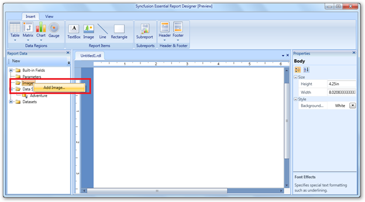
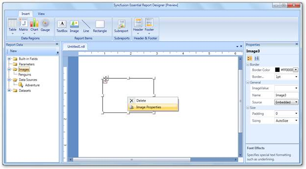
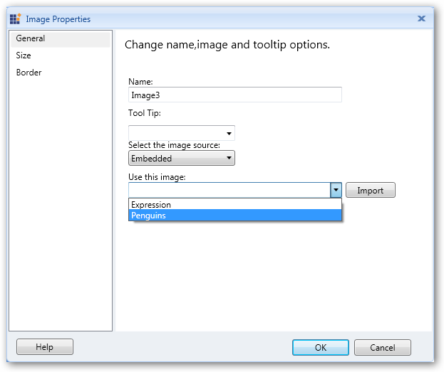
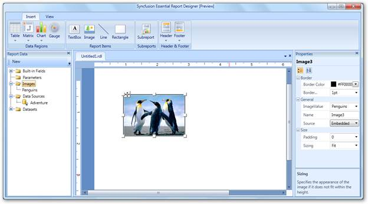
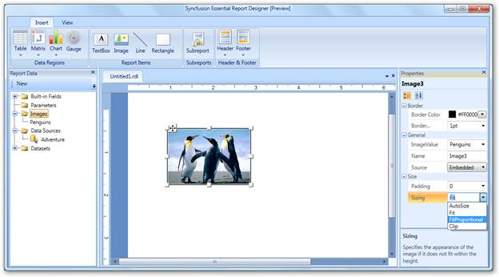
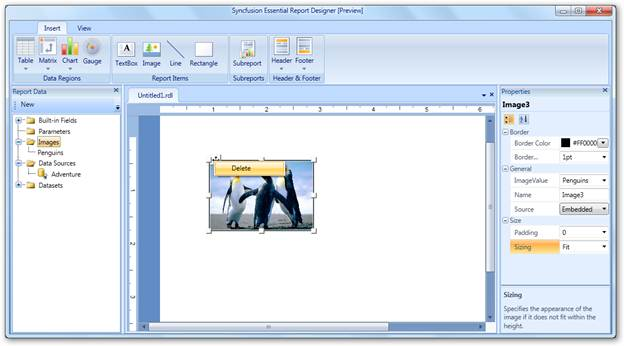

You can add an image to the Syncfusion Essential Report Designer using the following steps.
1. In Report Data, right-click on Images, and then click Add image.

Figure 36: Adding Image
 Note: You can also insert an image by dragging
the image from Report Data to Report Designer.
Note: You can also insert an image by dragging
the image from Report Data to Report Designer.
2. To change properties of the added image, right-click on the image and select Image Properties.

Figure 37: Report Designer with Image
3. In the Image Properties dialog, select an image you want to add in the Report Designer from the Use this image drop-down combo box, and then click Import.

Figure 38: Image Properties Dialog
Note: You can also use the following properties
to apply desired settings to the image:
· General—To set the ToolTip of the image or image source, select an embedded image, and import an image from the local disk.
· Size—To set the size and padding of the image.
· Border—To set the border color and border width of the image.
4. Click OK to update the image with the selected values.

Figure 39: Adding an Image to Report Designer
Setting Image Properties Using Properties Grid
1. Click on the image. The Properties grid will appear at the right of Report Designer.
2. Apply the required settings to the image by using the Editors in the Properties grid.

Figure 40: Setting Properties through the Properties Grid
Deleting Image
To delete the image from the Report Designer, right-click on the image and click Delete.

Figure 41: Deleting Image